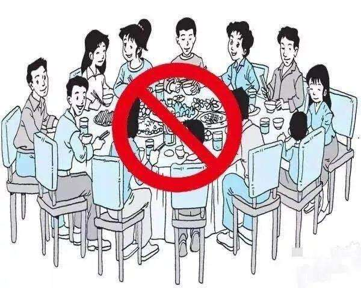
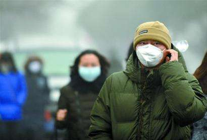
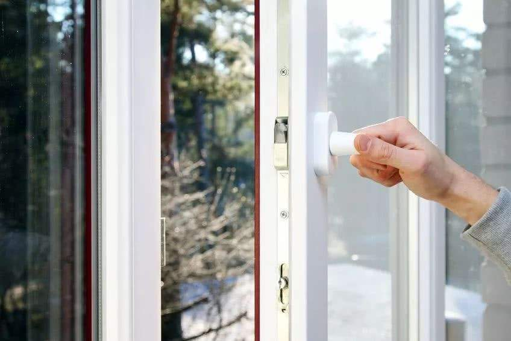

新冠病毒的预防方法
1.尽量减少外出活动
（1）减少到人员密集的公共场所活动，尤其是空气流动性差的地方。
（2）建议春节期间减少走亲访友和聚会，尽量在家休息。
（3）避免去疾病正在流行的地区。

2.个人防护和手卫生
（1）外出佩戴口罩。外出前往公共场所、就医和乘坐公共交通工具时，佩戴医用外科口罩或N95口罩。
（2）随时保持手卫生。减少接触公共场所的公共物品和部位；从公共场所返回、咳嗽手捂之后、饭前便后，用洗手液或香皂流水洗手，或者使用含酒精成分的免洗洗手液；不确定手是否清洁时，避免用手接触口鼻眼；打喷嚏或咳嗽时，用手肘衣服遮住口鼻。

3.健康检测与就医
（1）主动做好个人与家庭成员的健康检测，自觉发热时要主动测体温。家中有小孩的，要早晚摸小孩的额头，如有发热要为其测量体温。
（2）若出现可疑症状，应主动戴上口罩及时就近就医。若出现新型冠状病毒感染可疑症状（包括发热、咳嗽、咽痛、胸闷、呼吸困难、轻度纳差、乏力、精神稍差、恶心呕吐、腹泻、头痛、心慌、结膜炎、轻度四肢或腰部肌肉酸痛等），应根据病情，及时到医疗机构就诊。并尽量避免乘坐地铁、公共汽车等交通工具，避免前往人群密集场所。就诊时应主动告诉医生自己的相关疾病流行地区的旅行居住史以及发病后接触过什么人，配合医生开展相关调查。
4.保持良好卫生和健康习惯
（1）居室勤开窗，经常通风。
（2）家庭成员不共用毛巾，保持家具、餐具卫生，勤晒衣被。
（3）不随地吐痰，口鼻分泌物用纸巾包好，弃置于有盖垃圾箱内。
（4）注意营养，适度运动。
（5）不要接触、购买和食用野生动物（即野味）；尽量避免前往售卖活体动物（禽类、海产品、野生动物等）的市场。
（6）家庭备置体温计、医用外科口罩或N95口罩、家用消毒物品等物资。

学习了那么多知识，来检测一下吧！
新冠疫情防控知识小测试